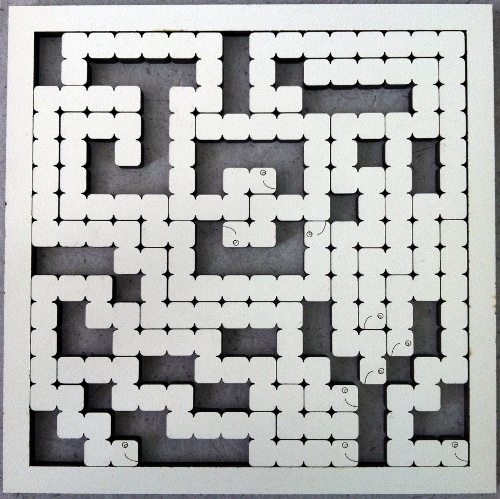

This is a 10-piece jigsaw puzzle, inspired by the puzzles made by Jolly Games. The puzzle is on a 16x16 grid, and all pieces are “thin” and do not fork. There’s a decent amount of empty space in the puzzle, which makes it hard.
The puzzle as given to teams looks like this:
(Click through to get a printable PDF if you want to make your own.)
The goal was to make a puzzle which took about the same amount of time to solve by hand or with a computer. (Earlier versions of the puzzle had even more empty space, which made it significantly harder for a human to solve!)
When assembled, the puzzle looks like this:

Reading the empty spaces, you see the answer: JOY.
(This was another metapuzzle submission which became an ordinary puzzle. In the metapuzzle version, letters in words mapped to pieces of the caterpillar, and assembling the caterpillars corresponding to particular words gave you the pieces of the jigsaw puzzle.)